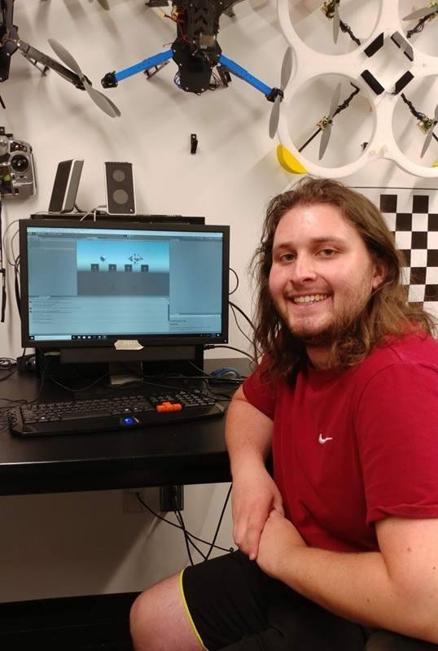

My name is Thomas Winterfield. I am a software developer from Charlotte, North Carolina. I graduated in December of 2019 (or will graduate if viewing this before that date). In my free-time, I enjoy playing video games, longboarding, and reading about programming languages and software engineering. Below, you can find a description of some of my work experience and personal projects.
In the summer of 2018, I was hired to do biomedical engineering for East Carolina University. I was tasked with verifying that the Microsoft HoloLens could demonstrate enough precision to be used as a general-purpose medical imaging device. I designed an experiment, along with a companion application, to verify the above condition. The experiment did demonstrate that the HoloLens was precise enough, and I wrote an abstract titled "Precision and Accuracy of Positioning in World Frame Using Microsoft HoloLens". I submitted this abstract to the Biomedical Engineering Society Conference and was selected to present this research at the 2018 Biomedical Engineering Society Annual Conference.
In the summer of 2019, I was hired by Siemens PLM Software to work as a back-end software engineer on the Mindsphere TimeSeries API. Through this internship, I have obtained practical experience working on an agile development team. Through the course of my internship at Siemens, I worked on optimizing our deployment pipelines, resolving/correcting bugs in our production environment, manually testing and improving some of our error handling scenarios, and publishing documentation for new software stability features. I was also asked to continue my internship as a part-time employee for the duration of my Fall 2019 semester.
In December of 2018, I noticed that when you go onto a youtube playlist, there is no display of how long that playlist actually is. This inspired me to make a tool that would use web scraping to calculate the length of a youtube playlist based on its URL. The initial version of this was written in Python, using the Flask framework and BeautifulSoup. It allowed a user to enter the URL of a youtube playlist, and then it would output the length of that playlist in HH:MM:SS format.
In the summer of 2019, I decided I would remake that application in Java, using the Spring framework to add functionality to the application and JSoup to do the web-crawling. It still has the same basic structure, users can send in a URL and the app will output how long that playlist is, but there is more too it. Playlist lengths are now stored in a database, so if URL is entered, the values do not have to be recalculated everytime. This database is cleared out every night at midnight (to account for playlists that are still being actively updated). There is also a second-chance system in place, so that frequently searched playlists are not removed. For those interested, the website can be found here and the source code can be found on my github.